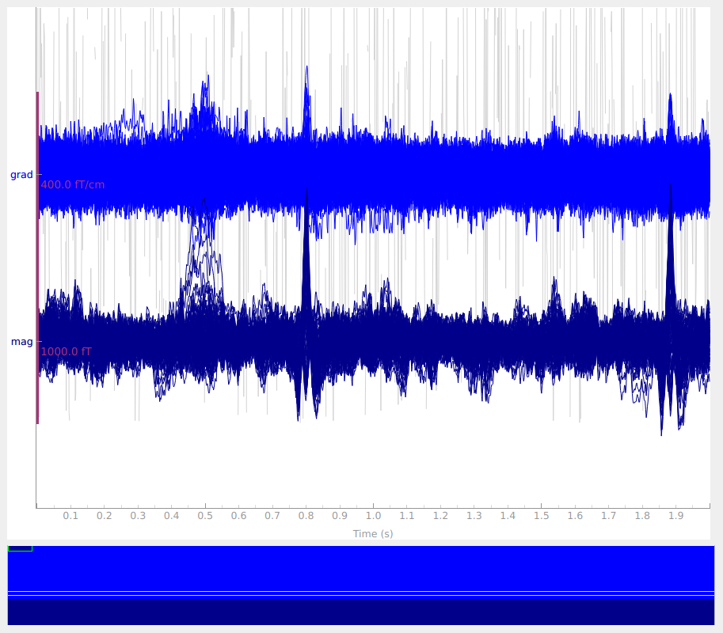

Note
Go to the end to download the full example code
Signal-space separation (SSS) and Maxwell filtering#
This tutorial covers reducing environmental noise and compensating for head movement with SSS and Maxwell filtering.
As usual, we’ll start by importing the modules we need, loading some example data, and cropping it to save on memory:
import os
import matplotlib.pyplot as plt
import seaborn as sns
import pandas as pd
import numpy as np
import mne
from mne.preprocessing import find_bad_channels_maxwell
sample_data_folder = mne.datasets.sample.data_path()
sample_data_raw_file = os.path.join(sample_data_folder, 'MEG', 'sample',
'sample_audvis_raw.fif')
raw = mne.io.read_raw_fif(sample_data_raw_file, verbose=False)
raw.crop(tmax=60)
Background on SSS and Maxwell filtering#
Signal-space separation (SSS) [1][2] is a technique based on the physics of electromagnetic fields. SSS separates the measured signal into components attributable to sources inside the measurement volume of the sensor array (the internal components), and components attributable to sources outside the measurement volume (the external components). The internal and external components are linearly independent, so it is possible to simply discard the external components to reduce environmental noise. Maxwell filtering is a related procedure that omits the higher-order components of the internal subspace, which are dominated by sensor noise. Typically, Maxwell filtering and SSS are performed together (in MNE-Python they are implemented together in a single function).
Like SSP, SSS is a form of projection. Whereas SSP empirically determines a noise subspace based on data (empty-room recordings, EOG or ECG activity, etc) and projects the measurements onto a subspace orthogonal to the noise, SSS mathematically constructs the external and internal subspaces from spherical harmonics and reconstructs the sensor signals using only the internal subspace (i.e., does an oblique projection).
Warning
Maxwell filtering was originally developed for Elekta Neuromag® systems,
and should be considered experimental for non-Neuromag data. See the
Notes section of the maxwell_filter() docstring
for details.
The MNE-Python implementation of SSS / Maxwell filtering currently provides the following features:
Basic bad channel detection (
find_bad_channels_maxwell())Bad channel reconstruction
Cross-talk cancellation
Fine calibration correction
tSSS
Coordinate frame translation
Regularization of internal components using information theory
Raw movement compensation (using head positions estimated by MaxFilter)
cHPI subtraction (see
mne.chpi.filter_chpi())Handling of 3D (in addition to 1D) fine calibration files
Epoch-based movement compensation as described in [1] through
mne.epochs.average_movements()Experimental processing of data from (un-compensated) non-Elekta systems
Using SSS and Maxwell filtering in MNE-Python#
For optimal use of SSS with data from Elekta Neuromag® systems, you should provide the path to the fine calibration file (which encodes site-specific information about sensor orientation and calibration) as well as a crosstalk compensation file (which reduces interference between Elekta’s co-located magnetometer and paired gradiometer sensor units).
fine_cal_file = os.path.join(sample_data_folder, 'SSS', 'sss_cal_mgh.dat')
crosstalk_file = os.path.join(sample_data_folder, 'SSS', 'ct_sparse_mgh.fif')
Before we perform SSS we’ll look for bad channels — MEG 2443 is quite
noisy.
Warning
It is critical to mark bad channels in raw.info['bads'] before
calling maxwell_filter() in order to prevent
bad channel noise from spreading.
Let’s see if we can automatically detect it.
raw.info['bads'] = []
raw_check = raw.copy()
auto_noisy_chs, auto_flat_chs, auto_scores = find_bad_channels_maxwell(
raw_check, cross_talk=crosstalk_file, calibration=fine_cal_file,
return_scores=True, verbose=True)
print(auto_noisy_chs) # we should find them!
print(auto_flat_chs) # none for this dataset
Applying low-pass filter with 40.0 Hz cutoff frequency ...
Reading 0 ... 36037 = 0.000 ... 60.000 secs...
Filtering raw data in 1 contiguous segment
Setting up low-pass filter at 40 Hz
FIR filter parameters
---------------------
Designing a one-pass, zero-phase, non-causal lowpass filter:
- Windowed time-domain design (firwin) method
- Hamming window with 0.0194 passband ripple and 53 dB stopband attenuation
- Upper passband edge: 40.00 Hz
- Upper transition bandwidth: 10.00 Hz (-6 dB cutoff frequency: 45.00 Hz)
- Filter length: 199 samples (0.331 sec)
[Parallel(n_jobs=1)]: Using backend SequentialBackend with 1 concurrent workers.
[Parallel(n_jobs=1)]: Done 1 out of 1 | elapsed: 0.0s remaining: 0.0s
[Parallel(n_jobs=1)]: Done 2 out of 2 | elapsed: 0.0s remaining: 0.0s
[Parallel(n_jobs=1)]: Done 3 out of 3 | elapsed: 0.0s remaining: 0.0s
[Parallel(n_jobs=1)]: Done 4 out of 4 | elapsed: 0.0s remaining: 0.0s
[Parallel(n_jobs=1)]: Done 366 out of 366 | elapsed: 0.8s finished
Scanning for bad channels in 12 intervals (5.0 sec) ...
No bad MEG channels
Processing 204 gradiometers and 102 magnetometers
Using fine calibration sss_cal_mgh.dat
Adjusting non-orthogonal EX and EY
Adjusted coil positions by (μ ± σ): 0.5° ± 0.4° (max: 2.1°)
Automatic origin fit: head of radius 91.0 mm
Using origin -4.1, 16.0, 51.7 mm in the head frame
Interval 1: 0.000 - 4.998
Interval 2: 5.000 - 9.998
Interval 3: 10.000 - 14.998
Interval 4: 15.000 - 19.998
Interval 5: 20.000 - 24.998
Interval 6: 24.999 - 29.998
Interval 7: 29.999 - 34.997
Interval 8: 34.999 - 39.997
Interval 9: 39.999 - 44.997
Interval 10: 44.999 - 49.997
Interval 11: 49.999 - 54.997
Interval 12: 54.999 - 60.000
Static bad channels: ['MEG 2443']
Static flat channels: []
[done]
['MEG 2443']
[]
Note
find_bad_channels_maxwell needs to operate on
a signal without line noise or cHPI signals. By default, it simply
applies a low-pass filter with a cutoff frequency of 40 Hz to the
data, which should remove these artifacts. You may also specify a
different cutoff by passing the h_freq keyword argument. If you
set h_freq=None, no filtering will be applied. This can be
useful if your data has already been preconditioned, for example
using mne.chpi.filter_chpi(),
mne.io.Raw.notch_filter(), or mne.io.Raw.filter().
Now we can update the list of bad channels in the dataset.
bads = raw.info['bads'] + auto_noisy_chs + auto_flat_chs
raw.info['bads'] = bads
We called find_bad_channels_maxwell with the optional
keyword argument return_scores=True, causing the function to return a
dictionary of all data related to the scoring used to classify channels as
noisy or flat. This information can be used to produce diagnostic figures.
In the following, we will generate such visualizations for the automated detection of noisy gradiometer channels.
# Only select the data for gradiometer channels.
ch_type = 'grad'
ch_subset = auto_scores['ch_types'] == ch_type
ch_names = auto_scores['ch_names'][ch_subset]
scores = auto_scores['scores_noisy'][ch_subset]
limits = auto_scores['limits_noisy'][ch_subset]
bins = auto_scores['bins'] # The the windows that were evaluated.
# We will label each segment by its start and stop time, with up to 3
# digits before and 3 digits after the decimal place (1 ms precision).
bin_labels = [f'{start:3.3f} – {stop:3.3f}'
for start, stop in bins]
# We store the data in a Pandas DataFrame. The seaborn heatmap function
# we will call below will then be able to automatically assign the correct
# labels to all axes.
data_to_plot = pd.DataFrame(data=scores,
columns=pd.Index(bin_labels, name='Time (s)'),
index=pd.Index(ch_names, name='Channel'))
# First, plot the "raw" scores.
fig, ax = plt.subplots(1, 2, figsize=(12, 8))
fig.suptitle(f'Automated noisy channel detection: {ch_type}',
fontsize=16, fontweight='bold')
sns.heatmap(data=data_to_plot, cmap='Reds', cbar_kws=dict(label='Score'),
ax=ax[0])
[ax[0].axvline(x, ls='dashed', lw=0.25, dashes=(25, 15), color='gray')
for x in range(1, len(bins))]
ax[0].set_title('All Scores', fontweight='bold')
# Now, adjust the color range to highlight segments that exceeded the limit.
sns.heatmap(data=data_to_plot,
vmin=np.nanmin(limits), # bads in input data have NaN limits
cmap='Reds', cbar_kws=dict(label='Score'), ax=ax[1])
[ax[1].axvline(x, ls='dashed', lw=0.25, dashes=(25, 15), color='gray')
for x in range(1, len(bins))]
ax[1].set_title('Scores > Limit', fontweight='bold')
# The figure title should not overlap with the subplots.
fig.tight_layout(rect=[0, 0.03, 1, 0.95])
Note
You can use the very same code as above to produce figures for
flat channel detection. Simply replace the word “noisy†with
“flat”, and replace vmin=np.nanmin(limits) with
vmax=np.nanmax(limits).
You can see the un-altered scores for each channel and time segment in the
left subplots, and thresholded scores – those which exceeded a certain limit
of noisiness – in the right subplots. While the right subplot is entirely
white for the magnetometers, we can see a horizontal line extending all the
way from left to right for the gradiometers. This line corresponds to channel
MEG 2443, which was reported as auto-detected noisy channel in the step
above. But we can also see another channel exceeding the limits, apparently
in a more transient fashion. It was therefore not detected as bad, because
the number of segments in which it exceeded the limits was less than 5,
which MNE-Python uses by default.
Note
You can request a different number of segments that must be
found to be problematic before
find_bad_channels_maxwell reports them as bad.
To do this, pass the keyword argument min_count to the
function.
Obviously, this algorithm is not perfect. Specifically, on closer inspection
of the raw data after looking at the diagnostic plots above, it becomes clear
that the channel exceeding the “noise” limits in some segments without
qualifying as “bad”, in fact contains some flux jumps. There were just not
enough flux jumps in the recording for our automated procedure to report
the channel as bad. So it can still be useful to manually inspect and mark
bad channels. The channel in question is MEG 2313. Let’s mark it as bad:
raw.info['bads'] += ['MEG 2313'] # from manual inspection
After that, performing SSS and Maxwell filtering is done with a
single call to maxwell_filter(), with the crosstalk
and fine calibration filenames provided (if available):
raw_sss = mne.preprocessing.maxwell_filter(
raw, cross_talk=crosstalk_file, calibration=fine_cal_file, verbose=True)
Maxwell filtering raw data
Bad MEG channels being reconstructed: ['MEG 2443', 'MEG 2313']
Processing 204 gradiometers and 102 magnetometers
Using fine calibration sss_cal_mgh.dat
Adjusting non-orthogonal EX and EY
Adjusted coil positions by (μ ± σ): 0.5° ± 0.4° (max: 2.1°)
Automatic origin fit: head of radius 91.0 mm
Using origin -4.1, 16.0, 51.7 mm in the head frame
Using 87/95 harmonic components for 0.000 (72/80 in, 15/15 out)
Loading raw data from disk
Processing 6 data chunks
[done]
To see the effect, we can plot the data before and after SSS / Maxwell filtering.
raw.pick(['meg']).plot(duration=2, butterfly=True)
raw_sss.pick(['meg']).plot(duration=2, butterfly=True)
- 
Notice that channels marked as “bad†have been effectively repaired by SSS, eliminating the need to perform interpolation. The heartbeat artifact has also been substantially reduced.
The maxwell_filter() function has parameters
int_order and ext_order for setting the order of the spherical
harmonic expansion of the interior and exterior components; the default
values are appropriate for most use cases. Additional parameters include
coord_frame and origin for controlling the coordinate frame (“head”
or “meg”) and the origin of the sphere; the defaults are appropriate for most
studies that include digitization of the scalp surface / electrodes. See the
documentation of maxwell_filter() for details.
Spatiotemporal SSS (tSSS)#
An assumption of SSS is that the measurement volume (the spherical shell where the sensors are physically located) is free of electromagnetic sources. The thickness of this source-free measurement shell should be 4-8 cm for SSS to perform optimally. In practice, there may be sources falling within that measurement volume; these can often be mitigated by using Spatiotemporal Signal Space Separation (tSSS) [2]. tSSS works by looking for temporal correlation between components of the internal and external subspaces, and projecting out any components that are common to the internal and external subspaces. The projection is done in an analogous way to SSP, except that the noise vector is computed across time points instead of across sensors.
To use tSSS in MNE-Python, pass a time (in seconds) to the parameter
st_duration of maxwell_filter(). This will
determine the “chunk duration” over which to compute the temporal projection.
The chunk duration effectively acts as a high-pass filter with a cutoff
frequency of \(\frac{1}{\mathtt{st\_duration}}~\mathrm{Hz}\); this
effective high-pass has an important consequence:
In general, larger values of
st_durationare better (provided that your computer has sufficient memory) because larger values ofst_durationwill have a smaller effect on the signal.
If the chunk duration does not evenly divide your data length, the final (shorter) chunk will be added to the prior chunk before filtering, leading to slightly different effective filtering for the combined chunk (the effective cutoff frequency differing at most by a factor of 2). If you need to ensure identical processing of all analyzed chunks, either:
choose a chunk duration that evenly divides your data length (only recommended if analyzing a single subject or run), or
include at least
2 * st_durationof post-experiment recording time at the end of theRawobject, so that the data you intend to further analyze is guaranteed not to be in the final or penultimate chunks.
Additional parameters affecting tSSS include st_correlation (to set the
correlation value above which correlated internal and external components
will be projected out) and st_only (to apply only the temporal projection
without also performing SSS and Maxwell filtering). See the docstring of
maxwell_filter() for details.
Movement compensation#
If you have information about subject head position relative to the sensors
(i.e., continuous head position indicator coils, or cHPI), SSS
can take that into account when projecting sensor data onto the internal
subspace. In case you are not sure whether you have that information or
want to doublecheck, you can use mne.chpi.get_active_chpi() (currently
only implemented for neuromag systems).
chpi_fif_file = os.path.join(mne.datasets.testing.data_path(), 'SSS',
'test_move_anon_raw.fif')
raw = mne.io.read_raw_fif(chpi_fif_file, allow_maxshield='yes')
# time-resolved information on active HPI coils
# if all hpi were inactive n_active is a zero-array
n_active = mne.chpi.get_active_chpi(raw)
print(f'Average number of coils active during recording: {n_active.mean()}')
Opening raw data file /home/circleci/mne_data/MNE-testing-data/SSS/test_move_anon_raw.fif...
Read a total of 12 projection items:
mag.fif : PCA-v1 (1 x 306) idle
mag.fif : PCA-v2 (1 x 306) idle
mag.fif : PCA-v3 (1 x 306) idle
mag.fif : PCA-v4 (1 x 306) idle
mag.fif : PCA-v5 (1 x 306) idle
mag.fif : PCA-v6 (1 x 306) idle
mag.fif : PCA-v7 (1 x 306) idle
grad.fif : PCA-v1 (1 x 306) idle
grad.fif : PCA-v2 (1 x 306) idle
grad.fif : PCA-v3 (1 x 306) idle
grad.fif : PCA-v4 (1 x 306) idle
Average EEG reference (1 x 60) idle
Range : 10800 ... 31199 = 9.000 ... 25.999 secs
Ready.
Using 5 HPI coils: 83 143 203 263 323 Hz
Average number of coils active during recording: 5.0
Head position data can be computed using
mne.chpi.compute_chpi_locs() and mne.chpi.compute_head_pos(),
or loaded with the:func:mne.chpi.read_head_pos function. The
example data doesn’t include cHPI, so here we’ll
load a .pos file used for testing, just to demonstrate:
head_pos_file = os.path.join(mne.datasets.testing.data_path(), 'SSS',
'test_move_anon_raw.pos')
head_pos = mne.chpi.read_head_pos(head_pos_file)
mne.viz.plot_head_positions(head_pos, mode='traces')
The cHPI data file could also be passed as the head_pos parameter of
maxwell_filter(). Not only would this account for
movement within a given recording session, but also would effectively
normalize head position across different measurement sessions and subjects.
See here for an extended example of applying
movement compensation during Maxwell filtering / SSS. Another option is to
apply movement compensation when averaging epochs into an
Evoked instance, using the mne.epochs.average_movements()
function.
Each of these approaches requires time-varying estimates of head position,
which is obtained from MaxFilter using the -headpos and -hp
arguments (see the MaxFilter manual for details).
Caveats to using SSS / Maxwell filtering#
There are patents related to the Maxwell filtering algorithm, which may legally preclude using it in commercial applications. More details are provided in the documentation of
maxwell_filter().SSS works best when both magnetometers and gradiometers are present, and is most effective when gradiometers are planar (due to the need for very accurate sensor geometry and fine calibration information). Thus its performance is dependent on the MEG system used to collect the data.
References#
Total running time of the script: ( 0 minutes 17.803 seconds)
Estimated memory usage: 12 MB